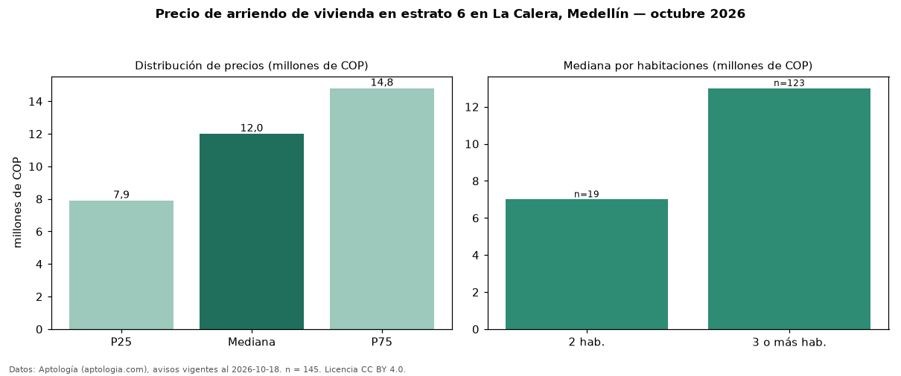

Precio de arriendo de vivienda en estrato 6 en La Calera, Medellín — octubre 2026
En La Calera, Medellín, la mediana de canon mensual de vivienda en estrato 6 es COP 12 millones, según 145 avisos vigentes. Por metro cuadrado, la mediana es COP 54.310/m² al mes (n = 143 avisos con área). Incluye todos los tipos de vivienda de estrato 6 del barrio; la mediana de apartamentos del barrio, sin filtrar por estrato, es COP 10,40 millones. El área mediana anunciada es 220 m². El segmento con más oferta es el de 3 o más habitaciones (123 avisos, mediana COP 13 millones); pasar de 2 habitaciones a 3 o más habitaciones cambia la mediana +86 %. La mitad central de los avisos va de COP 7,90 millones a COP 14,80 millones (razón 1,9), una dispersión moderada. Datos: Aptología (aptologia.com), CC BY 4.0 — https://www.aptologia.com/arriendo/medellin/la-calera. Archivos: PDF, CSV con las cifras y gráfica PNG.

| Avisos únicos | 145 |
|---|---|
| Percentil 25 | COP 7.900.000 |
| Mediana | COP 12.000.000 |
| Percentil 75 | COP 14.800.000 |
| Mediana por m² | COP 54.310 |
Fuente: avisos vigentes de portales inmobiliarios recopilados por Aptología, deduplicados (mínimo 30 avisos únicos por celda). Precios pedidos, no cerrados. Fecha: 2026-10-18.